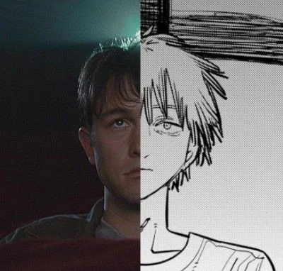
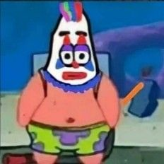

Membangun Dunia Melalui Kerja Sama Antar Negara
Temukan bagaimana negara-negara di dunia saling berinteraksi, berkolaborasi, dan bekerja sama dalam bidang ekonomi, politik, sosial, dan budaya demi kesejahteraan bersama.
Kolaborasi Global
Di era modern ini, tidak ada satu pun negara yang dapat hidup mandiri tanpa bantuan dan hubungan timbal balik dengan negara lain.
Materi Pembelajaran
Pahami konsep dasar, tujuan, bentuk, manfaat, serta analisis pentingnya kerja sama internasional secara terstruktur.
Pengertian Kerja Sama Antar Negara
Kerja sama antar negara adalah hubungan terstruktur yang dijalin oleh dua negara atau lebih untuk mencapai tujuan bersama yang saling menguntungkan. Hubungan ini diatur dalam perjanjian internasional dan didasarkan pada prinsip saling menghormati kedaulatan masing-masing.
Kerja sama ini muncul karena adanya perbedaan sumber daya alam, iklim, ilmu pengetahuan, teknologi, serta kebutuhan masyarakat yang tidak bisa dipenuhi sendiri oleh suatu negara.
Tujuan Utama Kerja Sama
Meningkatkan Perekonomian
Memperluas pasar ekspor, memperoleh investasi, dan mengamankan pasokan barang/jasa kebutuhan dalam negeri.
Menjaga Perdamaian & Keamanan
Mencegah konflik bersenjata, menyelesaikan sengketa wilayah secara damai, dan memerangi kejahatan lintas negara.
Transfer Ilmu & Teknologi
Saling bertukar teknologi terbaru, melatih tenaga ahli, serta meningkatkan kualitas pendidikan masyarakat.
Bentuk-Bentuk Kerja Sama
Berdasarkan jumlah negara peserta dan letak geografisnya, kerja sama dibagi menjadi:
- Bilateral: Kerja sama antara 2 negara saja (Contoh: Hubungan dagang Indonesia - Australia).
- Regional: Kerja sama antar negara di kawasan geografis yang sama (Contoh: ASEAN di Asia Tenggara, Uni Eropa di Eropa).
- Multilateral: Kerja sama yang melibatkan banyak negara dari berbagai belahan dunia tanpa batasan wilayah (Contoh: PBB, IMF, WTO).
Manfaat Nyata Bagi Negara
Adanya hubungan internasional memberikan dampak positif yang masif bagi pembangunan bangsa:
- Pertumbuhan Ekonomi: Membuka lapangan pekerjaan baru melalui investasi asing dan ekspor komoditas nasional.
- Stabilitas Sosial & Kesehatan: Kolaborasi penanganan wabah (seperti distribusi vaksin global) dan bantuan bencana alam.
- Ketahanan Lingkungan: Kesepakatan bersama mengatasi perubahan iklim global dan pelestarian hutan dunia.
Contoh Nyata Kerja Sama
Indonesia aktif berpartisipasi dalam berbagai kemitraan strategis global:
- ASEAN (Association of Southeast Asian Nations): Kolaborasi politik, ekonomi, dan keamanan regional Asia Tenggara.
- G20: Forum kerja sama ekonomi internasional beranggotakan 19 negara ekonomi utama dunia ditambah Uni Eropa dan Uni Afrika.
- Kerja Sama Indonesia - Jepang (IJEPA): Perjanjian kemitraan ekonomi bilateral di bidang perdagangan bebas dan ketenagakerjaan.
Analisis: Mengapa Ini Penting?
Di era globalisasi yang saling terhubung (interconnected), tidak ada satu pun negara yang dapat sepenuhnya mandiri. Ancaman modern seperti perubahan iklim, krisis pangan, pandemi global, dan ketegangan geopolitik tidak mengenal batas negara.
Tanpa kerja sama internasional, sebuah negara akan terisolasi, mengalami ketertinggalan teknologi, inflasi tinggi akibat kelangkaan barang, serta rentan terhadap krisis pertahanan dan keamanan global.
Fitur Eksplorasi Interaktif
Gunakan peta lokasi organisasi internasional untuk melacak pusat diplomasi dunia, atau telusuri timeline sejarah kerja sama Indonesia.
Bergabung dengan PBB
Indonesia resmi memproklamasikan kemerdekaan dan tak lama kemudian bergabung dengan Perserikatan Bangsa-Bangsa (PBB) sebagai anggota ke-60 untuk mendapatkan pengakuan kedaulatan internasional.
Konferensi Asia Afrika (KAA)
Penyelenggaraan KAA di Bandung, Jawa Barat. Menghasilkan Dasasila Bandung yang meletakkan dasar perdamaian dunia dan solidaritas negara-negara berkembang terjajah.
Deklarasi Bangkok (ASEAN)
Indonesia menjadi salah satu dari lima negara pendiri Asosiasi Negara-Negara Asia Tenggara (ASEAN) guna menciptakan kawasan yang stabil, damai, dan sejahtera.
Presidensi G20 Indonesia
Indonesia memegang keketuaan G20 dengan mengusung tema "Recover Together, Recover Stronger" yang memandu arah pemulihan ekonomi dunia pasca pandemi COVID-19.
Zona Kuis Siswa
TerverifikasiMemuat pertanyaan...
Profil Tim Kami
Kenali anggota kelompok kami yang bekerja sama menyusun materi, mendesain, dan membangun platform pembelajaran ini.
Azmi Fauzan D
Bertanggung jawab atas pengarahan konten pembelajaran, koordinasi anggota, serta penyelarasan materi utama.

Genta Permana U
Bertanggung jawab Menyusun ui web, struktur halaman, dan mengintegrasikan stylesheet css.
Mahardika M
Bertanggung jawab atas riset palet warna, desain layout yang nyaman, serta estetika visual web.
M Revi
Bertanggung jawab melakukan riset data, menyusun konten penjelasan, serta mengumpulkan referensi sumber resmi.

Rizki Hidayat
Bertanggung jawab melakukan pengujian fungsionalitas tombol, dokumentasi tugas, serta penyuntingan akhir.